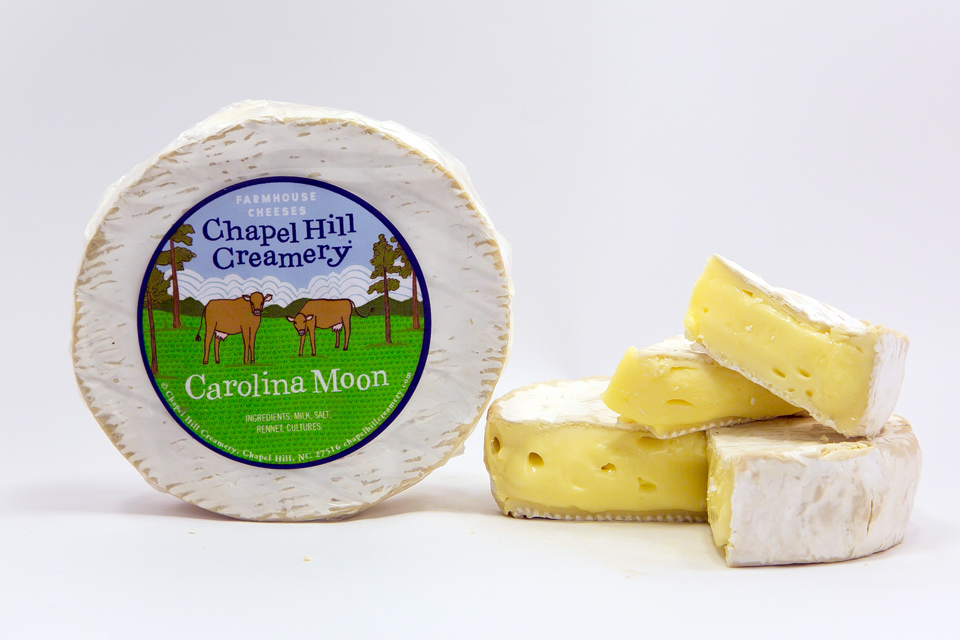
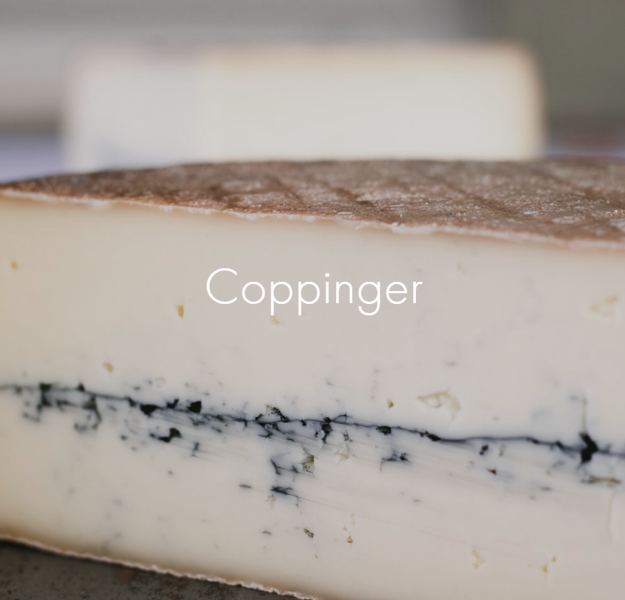
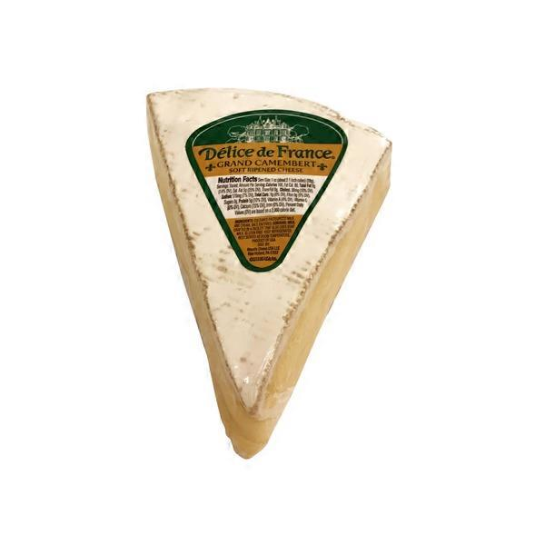
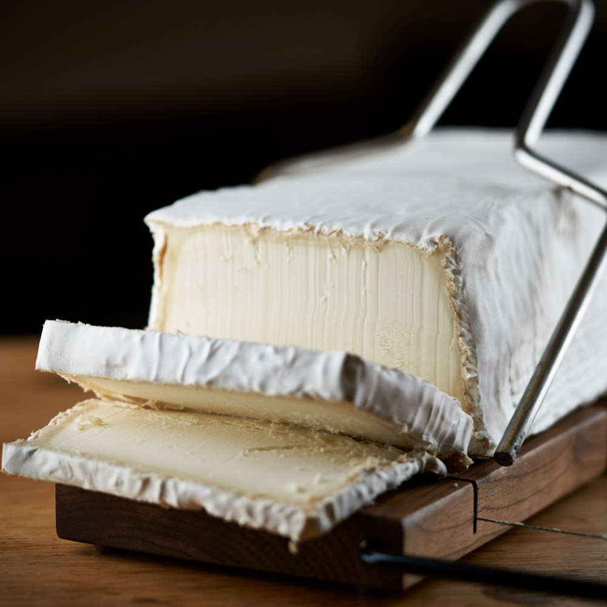
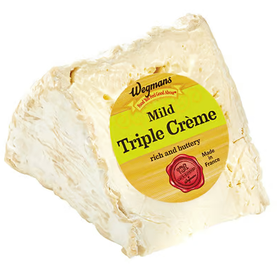

Brie-like#
Carolina Moon (Chapel Hill Creamery)#
{kind=link}
Origin: North Carolina
Milk: Cow
Purchase location: Carrboro Farmer’s Market
Purchase date: 12/11/21
Julie’s comments: White rind with slightly yellow soft interior. Very rich, creamy, buttery - a bit too much for me. Like a brie, but stronger, a bit more buttery & a bit of funk. I respect it, but this isn’t my favorite style of cheese. 3.06/5
Andrew’s comments: Rich & buttery, a bit funky but not too much. Soft center, firmer/chewy rind. I love this cheese, I could eat a whole wheel of this and a baguette for dinner. 4.6/5
Coppinger (Sequatchie Cove)#
{kind=link}
Origin: Tennessee
Milk: Cow
Purchase location: Whole Foods
Purchase date: 07/09/22
Julie’s comments: Yellowy firm cheese with a bleu-ish mottled line in the middle & a maxy tan rind. Tastes like fake butter, but too much, and fake onion slightly. Creamy, fatty taste, also a bit sweet. Tastes processed but doesn’t feel processed? I think it’s the over the top butter… 2.15/5
Andrew’s comments: Sue me, I like butter! Tasty, buttery, tangy, with a tiny bit of farmy aftertaste. Interesting texture, semi chewy inside, bit harder rind. Super snackable solo, would also be great grated over pasta. 4.0/5
Double Crème Brie (Normandie Brie)#

Origin: Canada
Milk: Cow
Purchase location: Weaver Street
Purchase date: 01/31/22
Julie’s comments: Mild, soft but not oozy-soft Brie with classic appearance. Creamy but not overwhelmingly so. Rind a bit hard and bitter or dirty-tasting. Overall pretty meh but I don’t hate it, which is an improvement for me and Brie I guess. 2.02/5
Andrew’s comments: Nice classic Brie, a bit creamy, a bit funky, but not too much. Pretty standard for Brie, but I like Brie. Was better the first couple of days, feels like it lost a bit of flavor. 3.1/5
Grand Camembert (Delice de France)#
{kind=link}
Origin: France
Milk: Cow
Purchase location: Fresh Market
Purchase date: 07/02/22
Julie’s comments: Soft off-white cheese with white & tan chalky rind. Brie-like - buttery, rich, creamy interior with mild, salty taste and slight funk that tingles the very back of mouth. Like creamy salted butter that went bad yesterday, but not necessarily in a bad way. 3.21/5
Andrew’s comments: Extra soft gooey center, pleasingly oily & melts in your mouth. Then outer rind gives just enough texture. Nice creamy brie-like flavor, fairly mild especially upfront. Some salty funk comes in later. 3.8/5
Leonara (Mitica)#
{kind=link}
Origin: Spain
Milk: Goat
Purchase location: Whole Foods
Purchase date: 11/25/21
Julie’s comments: Soft white goat’s milk cheese, gray rind, looks like brie. Funky & tanky, very creamy, texture almost like cream cheese. At first I didn’t like it, but it grew on me. Very rick, but also light/bright. 4.13/5
Andrew’s comments: Very unusual, creamy & soft like brie but with bleu-like funkiness. Great on its own. Would be interesting on a burger. 4.3/5
Mild Triple Crème Brie (Wegmans)#
{kind=link}
Origin: France
Milk: Cow
Purchase location: Wegmans
Purchase date: 12/25/21
Julie’s comments: Golly gee so creamy! Buttery with a sour/funky brie taste, salty. Very spreadable - good with flat bread or a stronger cracker flavor. Considering I don’t love Brie usually, this is pretty good 3.49/5
Andrew’s comments: Super creamy and soft, much more than average Brie. Nice chewy rind as contrast. More funky than average brie, subtle Bleu notes. 4.0/5
Thanks to Barb & Rob Necarsulmer for this cheese!